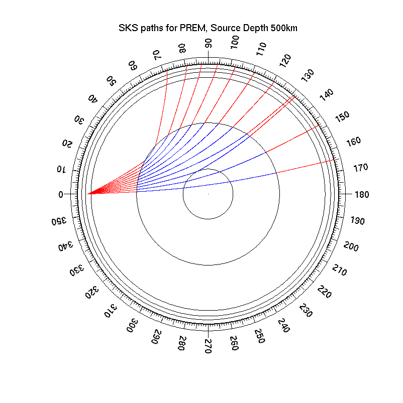
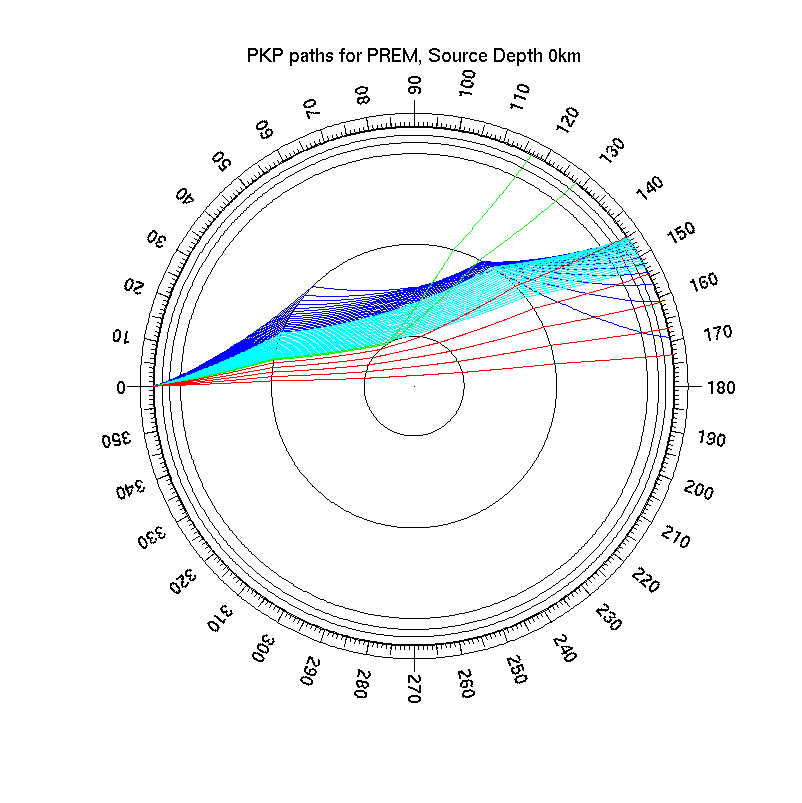

Task: Plot Rays
The MKRAYFAN routine allows to plot sets of ray paths through any model for all
seismic phases that TTBOX can handle.
- read the velocity model from an .nd file using model=mkreadnd(pfad);
or discretize a model from a .clr file.
- call
mkrayfan(phase,model,h); or
mkrayfan(phase,model,h,colspec); or
mkrayfan(phase,model,h,dangle); or
mkrayfan(phase,model,h,dangle,colspec);
where
- phase
- a string containing the phase name, e.g. 'P' or 'SKS'
- model
- a model structure containing the velocity model, as returned by MKREADND.
- h
- the focal depth in km
- dangle
- an optional angle increment, in degrees measured against the vertical
If this is a scalar rays with take off angles dangle:dangle:(180-dangle) are
generated.
If this is a vector, rays with takeoff angles as specified in this vector
are generated.
You may generate an angle list by calling
dangle=mksmarttakeoff(phase,model,h,deltaangle);
where deltaangle is a scalar defining an angle increment. MKSMARTTAKEOFF
produrces a list of angles which is optimized for the phase under consideration.
- colspec
- An optional string specifying the color used for rays. This may be a short
color name ('b', 'r', 'k'), a long color name ('blue','red','black') or a RGB triple.
It is important that the RGB triple is also given a string ('[0.1 0.2 0.3]'), because
being a string is what distinguishes a color specification from an angle parameter.
if no colspec argument is given, P wave legs are blue and S wave legs are red.
This generates a circular plot with colored rays and an angular scale around the perimeter and
discontinuities drawn as circles.
The plot is drawn into the current figure. If hold if off, the window is resized.
MKRAYFAN sets the "tag" property of line objects to allow later identification of P and S legs.
The used tags are "ray p" and "ray s".
Alternatively, you may
- call handles=mkrayfan(...);
The MKRAYFAN routine performs as above, but returns a list of handles to all ray segments.
- Use set(handles,PropertyName,PropertyValue); to change
properties of the ray lines. You may, for example, change colors in order to
distinguish the different branches of a triplication (see example below).

|
| Paths of P phase in PREM, for a focus at 500km depth with take off angle resolution 2°
(as vector graphics in PDF) |
|

|
| Paths of SKS phase in PREM, for a focus at 500km depth with take off angle resolution 5°.
(as vector graphics in PDF) |
|

|
| Paths of PKP phase in PREM, for a focus at 0km depth with take off angle resolution 0.2°.
This plot was created using four calls of MKRAYFAN and re-coloring the rays using the
handles returned by MKRAYFAN.
(as vector graphics in PDF) |
Bugs and Limitations
- Rays in media with linear velocity laws are circular arcs, but MKRAYFAN plots
them as piecewise straight lines. So at large magnification or with crudely
discretized models, ray will look polygonal instead of curved. But this is only
the plot, the computation, epicentral distances and times are correct.
eof.